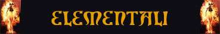

Gli elementali sono una categoria di creature originaria dei piani dimensionali interni. Contrariamente a quanto si può pensare questi esseri sono intelligenti e, quantomeno nel loro piano di esistenza, sono organizzati in strutture sociali complesse. Si tratta di creature spirituali il cui corpo è formato da materiale dell'elemento corrispondente plasmato e retto dall'essenza spirituale.
Nella grande maggioranza dei casi gli elementali sono creature di allineamento neutrale. Il loro temperamento neutrale è disturbato facilmente da qualsiasi eccesso o invasione dei loro interessi e territori che rischi di modificare l'equilibrio della loro vita. In rari casi queste creature sono coinvolte emotivamente risultando di allineamento Neutrale Malvagio o Neutrale Buono. Solo in rarissimi casi, però, costoro sviluppando un attitudine di tipo legale o caotico.
Essenza Spirituale: La principale caratteristica degli elementali è appunto la loro essenza di tipo spirituale. Il corpo che assumono non è altro che un ammasso di materiale dell'elemento corrispondente che la forza spirituale mantiene congiunto ed utilizza. Per tale motivo, quando lo spirito di un elementale viene ucciso, quello che resta del suo corpo non è altro che un ammasso di materiale. Non potendosi, quindi, considerare un cadavere, i resti di un elementale non possono essere animati né è possibile parlare con l'anima di un elementale o lederla in alcun modo, in quanto queste creature, essendo spirito puro, non posseggono alcuna anima.
Immunità Mentali: Gli elementali non sono dotati di un cervello di tipo animale. Per tale motivo, gli elementali non sono influenzati dalle magie mentali, sono immuni alla paura e non sono soggetti alle illusioni. Per lo stesso motivo gli elementali non possono essere storditi e non può svenire come una comune creatura vivente.
Immunità alle Armi Normali: Essendo creature di tipo spirituale perché le stesse siano danneggiate è necessario colpirle con armi incantate magicamente. Tutti gli elementali, infatti, indipendentemente dalla loro potenza risultano possedere la seguente abilità speciale difensiva:
IMMUNITA' ALLE ARMI NORMALI / TOTALE (Typical Ability): Il corpo della creatura possiede una particolare resistenza ai danni comuni. La creatura, infatti, annulla totalmente i danni subiti da ogni singolo colpo inferto. I danni provocati dalla magia o dalle armi magiche che siano almeno +1 nonché dagli attacchi fisici ad esse equivalenti non sono in alcun modo ridotti.
Assenza di Energia
Vitale: Essendo esseri di tipo spirituale,
gli elementali non possiedono energia vitale come le creature viventi. Per tale
motivo costoro sono immuni a tutti gli effetti, sia
magici che naturali, che incidono sull'energia vitale.
Per lo stesso motivo non essendo mai stato un essere vivente l'elementale non
andrà in stato comatoso (al raggiungimento di 0 punti ferità si considererà
definitivamente dissipato) e non potrà essere rianimato o resuscitato con i
normali incantesimi (potrà essere portato in vita con poteri particolari come ad
esempio utilizzando un desiderio).
Immunità al Veleno e alla Paralisi:
Non essendo dotati di un corpo di tipo organico, gli elementali risultano
immuni a tutti i veleni
che normalmente danneggiano gli esseri viventi. Per lo stesso motivo, queste creature
sono immuni a tutti gli effetti,
sia magici che naturali,
che provocano la paralisi.
Assenza di Riposo: Gli elementali non devono riposarsi e non dormono mai. Non esistendo, quindi, uno stato di sonno applicabile a queste creature, le stesse risultano immuni a tutti gli effetti, sia magici che naturali, che provochino sonno, o si applicano a creature dormienti (come le magie che alterano il sogno delle creature). Inoltre, gli elementali non si affaticano e non necessitano di riposare dopo lo svolgimento di attività fisiche stancanti. Per tale motivo, costoro risultano immuni a tutti gli effetti, sia magici che naturali, che provochino affaticamento, indebolimento e stanchezza fisica.
Assenza di Metabolismo e di Respirazione: Gli elementali, essendo esseri spirituali, non hanno alcuna necessità di nutrirsi e di respirare. Un elementale, ad esempio, può operare tranquillamente in ambienti senza presenza di ossigeno (si pensi sotto la superficie dell'acqua o nel vuoto) senza rischiare di soffocare. Gli elementali, inoltre, non crescono e non invecchiano risultando del tutto immuni a tutti gli effetti, sia magici che naturali, che provochino invecchiamento.
Insensibilità al Dolore: Gli elementali non provano dolore fisico, per questo motivo non subiscono tutti gli effetti che il dolore provoca alle creature (ad es. sono immuni agli effetti di molti incantesimi che causano dolore alla vittima) inoltre, non rischiano di perdere la concentrazione quando sono feriti.
Immunità ai Colpi Critici: Essendo creature il cui corpo è formato da puro elemento, senza la presenza di alcun organo di tipo biologico, costoro non subiscono alcun effetto dei colpi critici né quelli similari prodotti da alcune arti di combattimento.